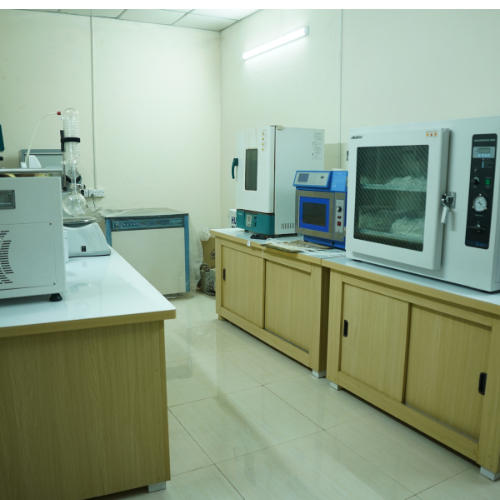
Laboratory
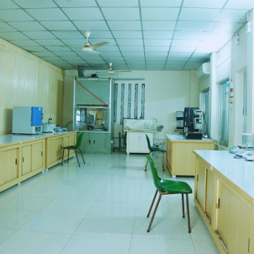
Laboratory
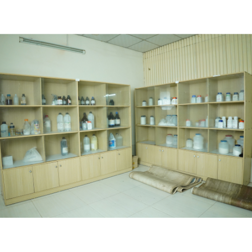
Laboratory
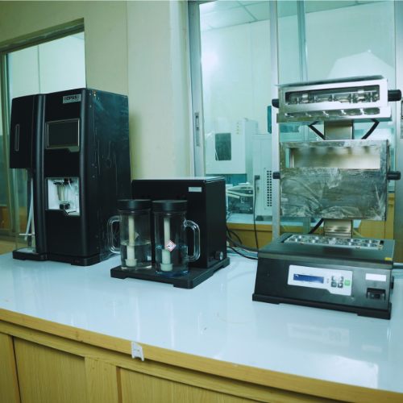
N02 Component Analyzer
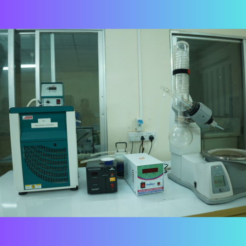
Chemical Recycling Machine
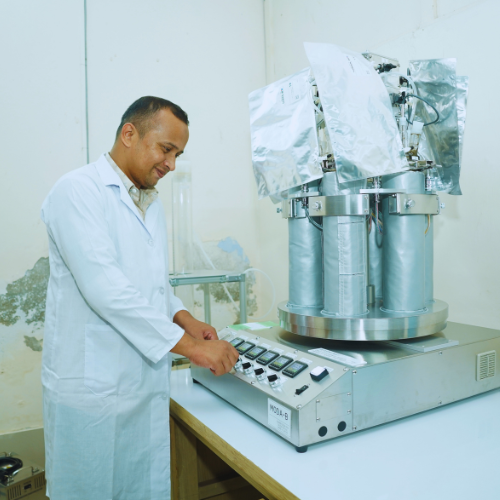
Biodegradable Machine
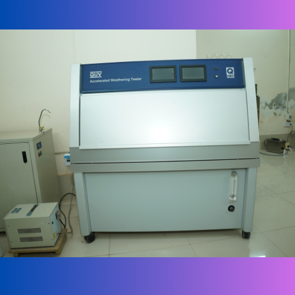
Weathering Tester
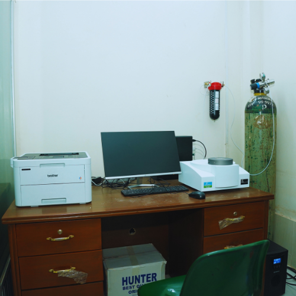
Thermal Analyzer
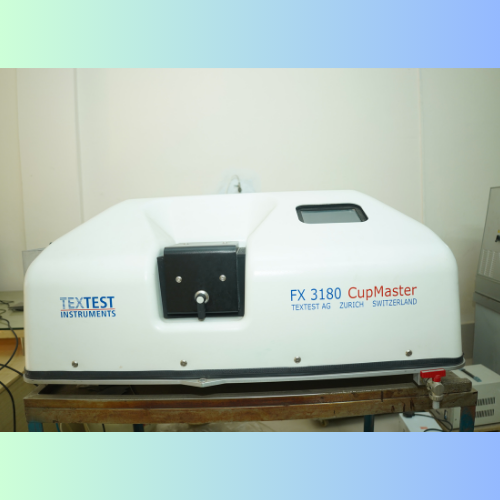
Water Vapor Transmission Rate Analyzer
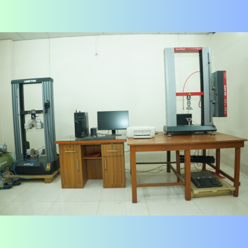
Universal Testing Equipment
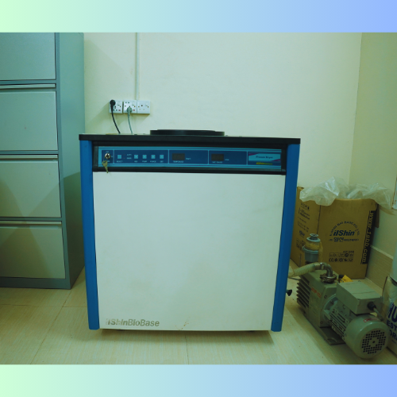
Freeze Dryer
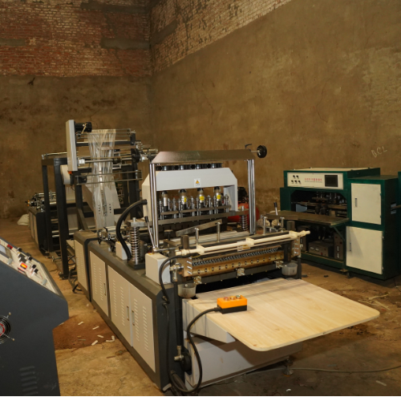
Automatic Bag Making Machine

Automatic Bag Making Machine

Automatic Bag Making Machine
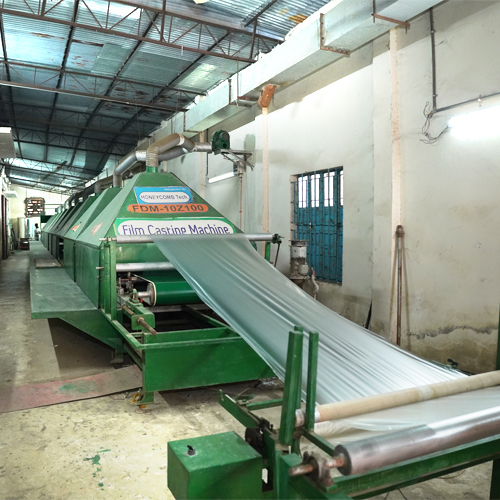
Biopolymer Sheet Making Machine
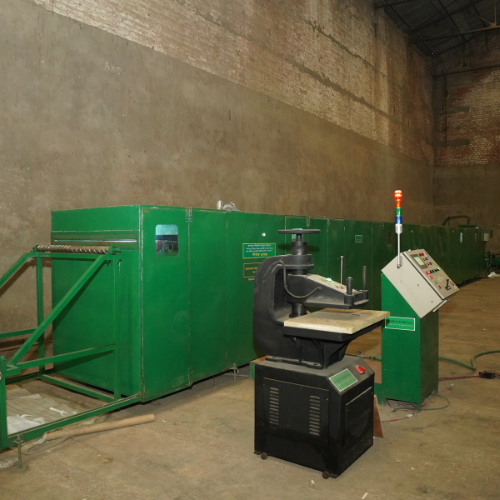
Ammonia Treatment Plant

Jute Fiber Cutting Machine

Handling Cutting Machine

Handling Cutting Machine

Handling Cutting Machine

Printing Machine

Cellulose Construction Machine

Jute Fiber
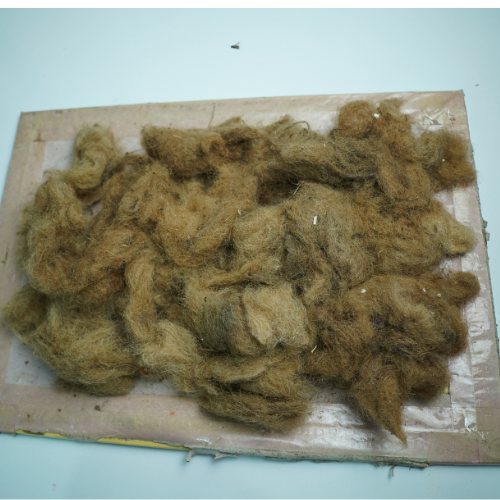
Wastage Jute Fiber (Caddies)
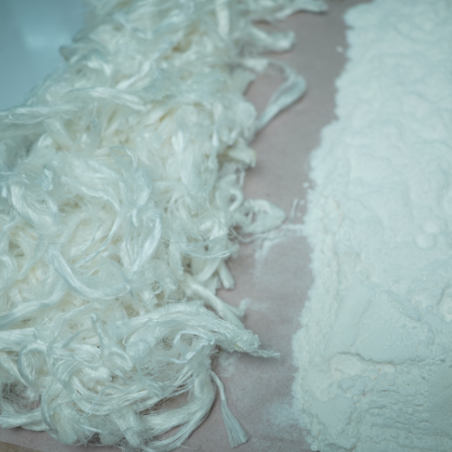
Jute Cellulose
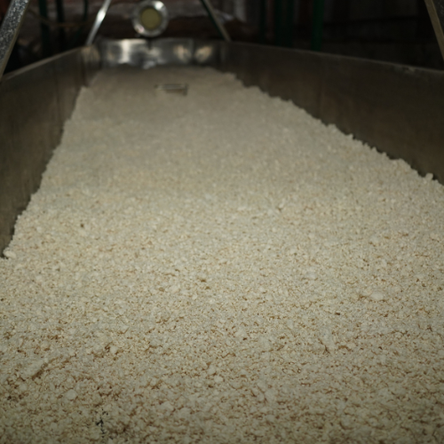